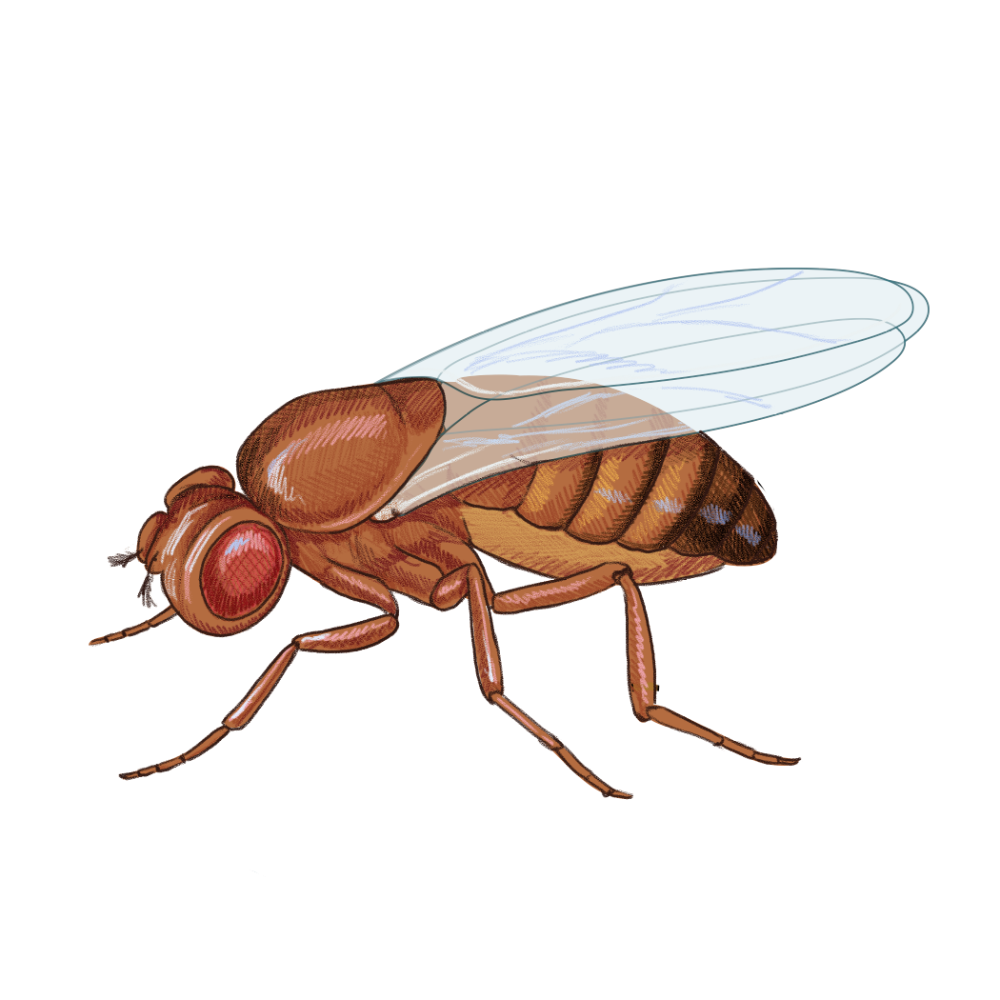

This document provides a brief overview of the features available for authors. It appears in the navigation bar under Demo and exists to help authors during development of their pub. It is removed as a pre-publishing step.
Introduction
This notebook demos some key features. For a more extensive resource, see Quarto’s excellent documentation.
Text
Headers
h1 headers (# <HEADER-TEXT>) are reserved for the title of the pub, so use h2 (## <HEADER-TEXT>) for section titles and h3, h4, etc. for sub-sections.
Callouts
To draw more attention to a piece of text, use callouts:
Important
The most effective way to see the rendered pub is to setup a live preview that re-renders the pub whenever you save this file. Do that with make preview.
Suppress code block visibility while retaining the cell output (#| echo: false):
Note
The code block below runs and the output is visible, but the code itself is absent from the rendering.
The code that generated this print statement is hidden.
Render the output in different places, like in the right margin (#| column: margin):
df
a
b
c
0
1
True
marco
1
2
True
polo
2
3
False
marco
In general, content placement in highly customizable. For more options, see this Quarto resource.
Annotation
You can annotate lines of code. Lines will reveal their annotation when the user hovers over the circled number on the right hand side of the code block.
You can choose to either fold (#| code-fold: true) or supress (#| echo: false) code snippets that distract from the narrative. However, if you’ve written an extensive amount of code, it may be more practical to define it in a package that this notebook imports from, rather than defining it in the notebook itself. This project is already set up to import from packages found in the src/ directory, so place any such code there. As an example, this code block imports code from a placeholder analysis package found at src/analysis.
from analysis import polo_if_marcopolo_if_marco("marco")
It’s possible that your local preview fails to render the above widget, and you instead see something to the effect of:
Unable to display output for mime type(s): application/vnd.plotly.v1+json
If you want to see how your widget renders within the pub, run make execute and then start a new preview (make preview).
Static images
You can include images that are not rendered by code, either as formal figures or standalone images.

Figure 2: Example of a static image being used as a figure.
Example of a standalone static image.
References
Avasthi P, Hochstrasser ML, Roth R. (2024). Early update on Arcadia publishing 2.0: Scientists are in charge, speed is an issue
Lin Z, Akin H, Rao R, Hie B, Zhu Z, Lu W, Smetanin N, Verkuil R, Kabeli O, Shmueli Y, Santos Costa A dos, Fazel-Zarandi M, Sercu T, Candido S, Rives A. (2023). Evolutionary-scale prediction of atomic-level protein structure with a language model. https://doi.org/10.1126/science.ade2574